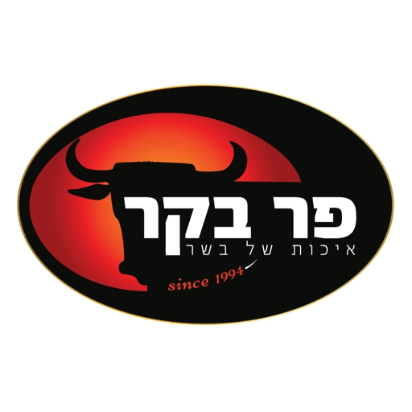

טוען…
לקבל תזכורות לטלפון?
הפעלה
לא עכשיו
קרב את הטלפון למדבקה – רק מה שבתוך המסגרת נקלט
פנס
הקלדת המספר
ביטול
קרב מדבקה למסגרת
פנס
⇄
הדף לא נטען
נסה שוב
⇄ חזרה למסך העובדים
צילום סחורה – לוחצים על העיגול לכל תמונה
פנס
סיום
לא נמצא קוד עובד.
יש לפתוח פעם אחת את הקישור האישי שקיבלת מהמנהל, ואז להתקין את האפליקציה.